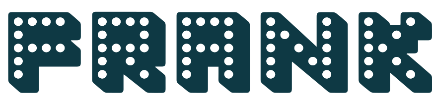

Talk to FRANK prototype
The full build: the redesigned homepage, drug page, emergency help and service-unavailable fallback, wired together with a review-only prototype bar to jump between them.
frank-prototype.html
Open mockup
Prototype index
Every screen we've built for Talk to FRANK, in one place. Open the master build to walk the full journey, or jump straight into an individual page.
Master build
The complete, working prototype — the single source of truth. Every page below is folded into this build; new sections get combined here.
The full build: the redesigned homepage, drug page, emergency help and service-unavailable fallback, wired together with a review-only prototype bar to jump between them.
frank-prototype.html
Open mockupPrototypes
Each page on its own. These open the master build straight at that screen, so what you see is exactly what's in the full build.
The hybrid search-and-browse landing: search any drug, quick-pick chips, the drug warning banner and a prominent emergency callout.
frank-prototype.html#home
Open mockupThe Tier-1 drug redesign (Ketamine): an at-a-glance summary, a visible safety panel, the mixing module, jump links and accordions for the detail.
frank-prototype.html#drug
Open mockupThe stress-state redesign: a critical 999 banner, a what-to-say script, while-you-wait steps, the recovery position and aftercare guidance.
frank-prototype.html#emergency
Open mockupThe fallback page for when the site is down — still leading with 999 guidance and the FRANK helpline and text contacts.
frank-prototype.html#unavailable
Open mockupDesign system
The source files behind the build — the palette and components everything is drawn from.
The authoritative reference: one palette organised by role, the core component patterns, and every text/background pair checked for WCAG 2.2 AA contrast.
prototype/designs/ttf-design-patterns.html
Open mockup